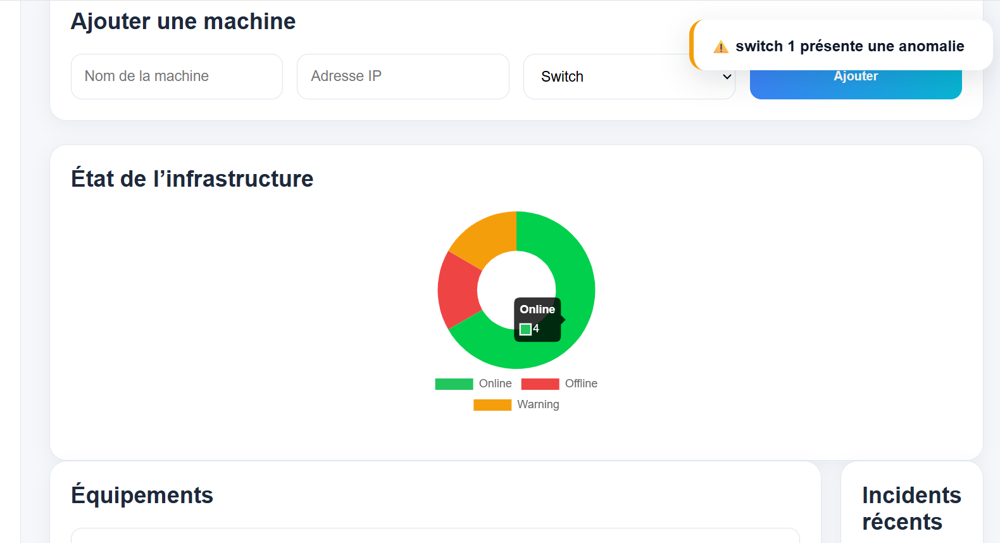

VigilFlow — SaaS de monitoring IT
VigilFlow est un projet de dashboard SaaS pensé pour surveiller des équipements informatiques. L’objectif est de centraliser l’état des machines, les incidents, les alertes et les statistiques dans une interface claire et moderne.
Pourquoi ce projet ?
Ce projet répond à un besoin courant en entreprise : suivre l’état des équipements informatiques. Il permet de simuler un outil de supervision simple pour repérer rapidement les machines en ligne, hors ligne ou en anomalie.
Fonctionnalités développées
📊 Dashboard dynamique
Affichage automatique du nombre total de machines, des machines en ligne, hors ligne et en warning.
🖥 Gestion des machines
Ajout, suppression et affichage dynamique des équipements dans un tableau.
🔎 Recherche et filtres
Recherche par nom, IP ou type, avec filtre par statut.
📈 Graphique de monitoring
Utilisation d’un graphique pour visualiser la répartition des statuts.
🔔 Notifications
Affichage de notifications lorsqu’une machine passe en warning ou hors ligne.
💾 Sauvegarde locale
Utilisation du localStorage pour conserver les machines et l’utilisateur connecté.
Captures du projet
Dashboard principal et tableau VigilFlow


Ajout d’une machine

Graphique et statistiques dynamiques

Page de connexion


Ce que j’ai appris
JavaScript dynamique
Manipulation du DOM, génération de lignes de tableau et mise à jour de l’interface sans recharger la page.
Gestion de données
Utilisation d’objets, de tableaux, de filtres et du localStorage.
Logique SaaS
Création d’une interface de type admin panel avec gestion d’équipements, statistiques et notifications.
Expérience utilisateur
Amélioration de l’interface avec recherche, filtres, notifications flottantes et page de connexion.